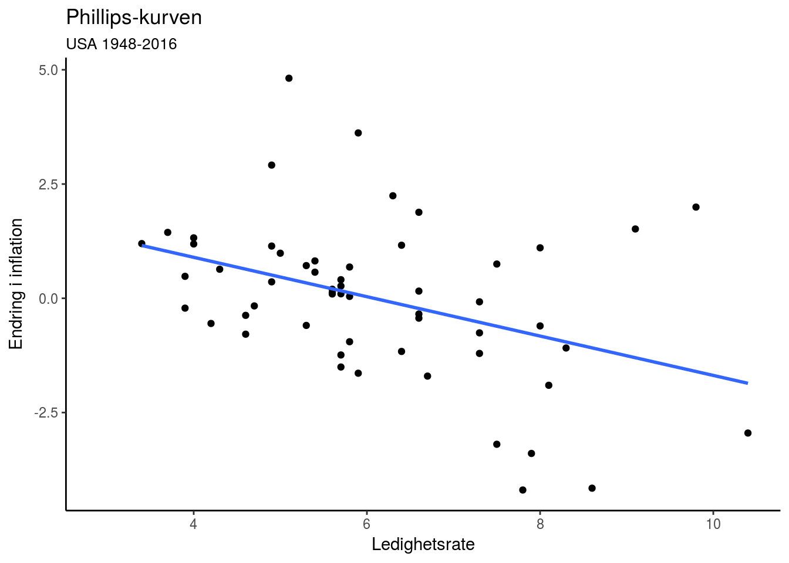
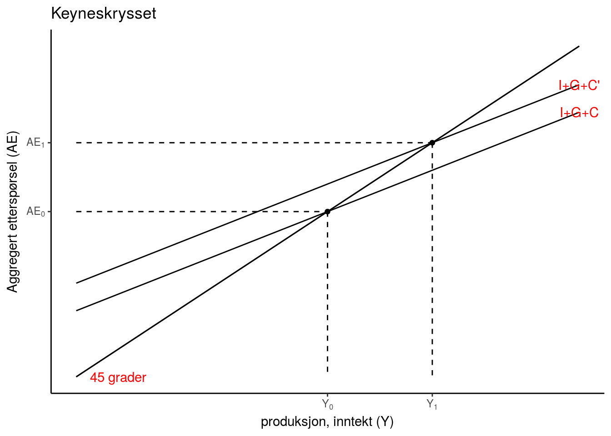
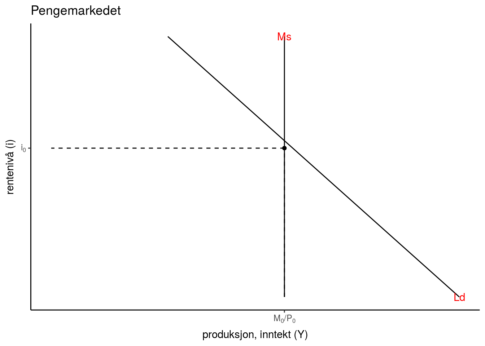

| Økonom | Konjunktursvingninger | Stabiliseringspolitikk | Krisepolitikk |
|---|---|---|---|
| Keynes/Krugman | Investeringer (\(\Delta\overline{I}\)) ‘animal spirits’ | Finanspolitikk (\(\Delta G\)) | Nullrente (\(i=0\)) og ekspansiv finanspolitikk (\(\overline{G}>0\)) |
| Minsky | Økonomisk stabilitiet fører til ustabilitet | Finansreguleringer og sentralbank | Bail-out (redningspakker) |
| Friedman | Endringer i pengemengden (\(\Delta M\)) | Konstant pengemengdevekst (\(\frac{\Delta M}{M}\) = k > 0) | Nullrente (\(i=0\)) og holde pengemengden stabil |
| Hayek | Bankenes kredittvekst | Fri konkurrane i banksektoren (ingen sentralbank) | Likvidering (bail-in) |
Innholdsfortegnelse
- Oversikt over faget
- Del 1: Konjunktursvingninger
- Grunnleggende bakgrunnkunnskaper
- Enkel Keynes-modell
- IS-LM modellen
- Referanser
Oversikt over faget
Tre hovedtemaer:
- Konjunktursvingninger - del I
- Økonomisk vekst - del II
- Økonomiske kriser - del III
USA 1929-2016

USA 1946-2007

- Sentralt poeng: Makroøkonmien innehar selvkorrigerende mekanismer
USA 1929-1939 (“The Great Depression”) og 2007-2012 (“The Great Recession”)

- Sentralt poeng: Makroøkonmiens selvkorrigerende mekanismer er satt ut av spill
Tre grunnleggende spørsmål blir forsøkt besvart
- Hva forårsaker konjunktursvingninger?
- Hva er forklaringen bak økonomisk vekst?
- Hvorfor oppstår økonomiske kriser?
Og i den sammenheng, hvilken rolle bør offentlige myndigheter spille?
- Stabiliseringspolitikk - aktiv eller passiv
- Samfunnsinstitusjoner og graden av frie markeder
- Bail-in (investorene tar tapene) vs. bail-out (offentlige redningspakker)
Kjente makroøkonomer


Politikkanbefalinger
Abstraksjon
More things should not be used than are necessary (Entia non sunt multiplicanda praeter necessitatem)
- Prinsippet slår fast at man ikke skal anta flere ting enn hva som trengs for å forklare de observasjoner som en studerer
Disse tingene vil i vårt kurs være knyttet til:
- Hvem utgjør de økonomiske aktørene i økonomien?
- Hvilken markeder er operasjonelle (\(\text{v}\) er symbolet for dette)?
- Hva er størrelsen på økonomien?
Videre, vi formulerer vi de økonomiske sammenhengene vi mener gjør seg gjeldende ved bruk av matematikk (dvs. algebraiske ligninger)
Sentrale aktører i makroøkonomien
Husholdninger - del I, del II og del III
- Konsumerer (\(\text{C}\)) og sparer (\(\text{S}\))
Bedrifter - del I, del II og del III
- Produserer (\(\text{Y}\)) og investerer (\(\text{I}\))
Finansinstitusjoner - del II, III
- Investerinsbanker: Mellomledd mellom långivere og låntakere
- Forretningsbanker: Mellomledd mellom långivere og låntakere og innehar kredittskapende evner \(\Rightarrow\) bestemmer lånetilbudet i økonomien
Sentralbanken - del I og III
- Bestemmer rentenivå (\(\text{i}\)) eller pengemengden (\(\text{M}\))
Offentlige myndigheter - del I og III
- Finanspolitikk (\(\text{G}\))
Markedene vi studerer
Godemarkedet (varer og tjenester)
- del I, del II og del III
Pengemarkedet (/obligasjonsmarkedet)
- del I og del III
Arbeidsmarkedet
- del I og del II
Finansmarkeder
- del II kapitalmarkedet (investeringsbanker)
- del III lånemarkedet (forretningsbanker)
Valutakursmarkedet
- del I
Størrelsen på en økonomi
Lukket (eller global) økonomi
- Påvirkes ikke av omverden
- Eks. på en grov tilnærming: USA
Liten åpen økonomi
- Påvirkes av, men påvirker ikke selv omverden
- Eks. på en tilnærming: Norge
Øvelse: Lag et oversiktskart som summerer opp alle opplysningene knyttet til de økonomiske agentene, markedene og størrelsen på økonomien
Del 1: Konjunktursvingninger
Grunnleggende bakgrunnkunnskaper
Stabiliseringsmål lukket økonomi
Intern balanse (lukke produksjonsgapet):
\[(Y-\overline{Y})=0\]
Sentrale nasjonalregnskapstall
- Bruttonasjonalprodukt (GDP/BNP): Den samlede verdien av alle varer og tjenester som blir produsert i landet i løpet av et år
- Nominelt BNP (LY) \[LY = PY\]
- Reelt BNP (Y) \[Y = LY/P \]
- Bruttonasjonalinntekt (GNP/BNI): Den samlede verdien av alle varer og tjenester som landets innbyggere produserer i løpet av et år
- Arbeidsledighetsrate:
\[u = 1-\frac{L}{N}\]
- Inflasjon:
\[\pi = \frac{\Delta P}{P} =\frac{P_{t} - P_{t-1}}{P_{t-1}}\]
Noen sentrale empiriske sammenhenger
Okuns lov: negativ sammenheng mellom endring i arbeidsledighet og vekst (eller endring i vekst) i BNP (realpriser)

Phillips-kurven: negativ sammenheng mellom arbeidsledighet og endring i inflasjon (eller inflasjon)

Hva bestemmer aggregert produksjon (BNP)?
Kort sikt (0-3 år):
- Pga antagelsen om prisstivheter på kort sikt (uendret lønn og produktpriser), vil samlet etterspørsel (\(AE\)) bestemme BNP (\(Y\))
- Vi legger dette til grunn i enkel Keynes, IS-LM, og Mundell-Fleming modellen (del I og del III)
Mellomlang sikt (5-10 år):
- Tilgangen på innsatsfaktorene arbeidskraft (\(L\)), teknologi (\(A\)) og kapital (\(K\)) bestemmer BNP (\(Y\))
- Langsiktig likevektsbetingelse for AD-AS modellen (del I)
Lang sikt (10-50 år):
- Teknologisk framgang (\(a\)), kapitalakkumulasjon (\(\Delta K\)) og befolkningsvekst (\(n\)) bestemmer BNP (\(Y\))
- Hovedresultatet fra Solow-modellen (del II)
Enkel Keynes-modell
- Likevekt i godemarkedet (varer og tjenester)
Aggregert etterspørsel (AE)
\[AE \equiv C + I + G\]
Markeder i likevekt: Godemarkedet (varer og tjenester)
\[Y = AE \equiv C + I + G\]
Adferdsligninger
Husholdninger
\[C = \overline{C} + c(Y - T)\]
Hvor \(0<c<1\) (marginale konsumtilbøyeligheten) og \(\overline{C}>0\) (inntektsuavhengig konsum)
Bedrifter
\[I = \overline{I} - b\cdot i\]
Hvor \(\overline{I}>0\) (‘animial spirits’) og \(b>1\) (lavere rente gjør flere investeringsprosjekter lønnsomme pga. økt nåverdi)
Sentralbanken
\[i = \overline{i}\]
Hvor \(\overline{i} >= 0\)
Offentlige myndigheter
\[G = \overline{G}\]
og
\[T = \overline{T}\]
Modellen består av
Endogene variabler (bestemt av modellen): \(Y, C, I, G\)
Eksogene variabler (bestemt utenfor modellen): \(\overline{C}, \overline{T}, \overline{i}, \overline{I}, \overline{G}\)
Parametre: \(c, b\)
Løsning av modellen:
Setter samtlige adferdsligningene inn i likevekstbetingelsen for godemarkedet
\[Y = \overline{C} + c(Y - \overline{T}) + \overline{I} - b\cdot \overline{i} + \overline{G}\]
Løser modellen mhp. på Y (godemarkedet)
\[Y = \frac{1}{1-c} \left [ \overline{C} -c\cdot \overline{T} - b\cdot \overline{i} + \overline{G} \right ]\]
- Grafisk framvisning
Komparativ statikk (analyse fra en likevekt til en annen):
Økte investeringer (‘eks. pga. animal spirits’) \(\Delta{\overline{I}}>0\)
Formelt: \[\Delta Y = \frac{1}{1-c}\Delta \overline{I}>0 \text{ eller } \frac{\Delta Y}{\Delta \overline{I} } = \frac{1}{1-c}>1\]
Verbalt (dynamisk tolkning utenfor modellen):
Økte investeringer \(\rightarrow\) økt produksjon \(\rightarrow\) initierer en multiplikatoreffekt: \(\rightarrow\) økt disponibel inntekt \(\rightarrow\) økt konsum \(\rightarrow\) økt produksjon osv.
- Grafisk:

Stabiliseringspolitikk
Reduserte offentlige utgifter \(\Delta G < 0\)
\[\Delta Y = \frac{1}{1-c} \left [ \Delta \overline{I} + \Delta \overline{G} \right ]\]
Dersom vi lar \(\Delta \overline{I} = - \Delta \overline{G} > 0 \Rightarrow \Delta Y = 0\) (dvs. intern balanse)
- Merk: Det politiske systemet i de fleste land innebygd iboende tregheter tilknyttet budsjettendringer. Dette gjør finanspolitikk vanskelig å implementere som konjunkturstabiliserende virkemiddel. Dette fordi treghetene gjør at man responderer for sent sett i forhold til konjunktursituasjonen
Øvelse
Redusert rentenivå \(\Delta{\overline{i}}<0\)
Formelt:
Grafisk (Y,EA) plan og (Y,i) plan:
Verbalt (tolkning utenfor modellen):
IS-LM modellen
Markeder i likevekt: Gode- og pengemarkedet
Likevekstsbetingelsen for godemarkedet
\[Y = AE \equiv C + I + G\] Likevekstsbetingelsen for pengemarkedet
\[M^{s} = L_{m}\]
Adferdsligninger (bare endringer og nye ligninger er lagt til her)
Husholdninger
Bestemmer pengeetterspørselen (realverdi) \[L_{m} = \kappa Y -hi\] Hvor \(k>0\) (pengeetterspørselens inntektsfølsomhet) og \(h>0\) (pengeetterspørselens rentefølsomhet)
Sentralbanken
\[M = \overline{M} \]
Offentlige myndighter
\[T = tY \]
Hvor \(t\) er prosentvis skattesats
Løsning av modellen:
Godemarkedet (samme løsningsmetodikk som under enkel Keynes-modell)
Bestemmer produksjonen
\[Y = \frac{1}{1-c(1-t)} \left [ \overline{C}- b\cdot \overline{i} + \overline{G} \right ]\]
Merk: høyere skattesats gjør multiplikatoren mindre
Pengemarkedet (M0 - basispengemengden)
Bestemmer rentenivået
\[kY -hi = \overline{M}/P\]

IS-LM diagrammet
Viser den samtidige likevekten i gode- og pengemarkedet
Formelt
IS-kurven finner vi ved å differensiere likevektsbetingelsen for godemarkedet mph. Y og i:
\[\Delta Y =\left[\frac{-b}{1-c(1-t)}\right ] \cdot \Delta \overline{i}<0\]
- Økt rente gir lavere investeringer som initierer en negativ multiplikatoreffekt (redusert investeringer før til redusert etterspørsel som fører redusert konsum osv.)
LM-kurven finner vi ved å differensiere likevektsbetingelsen for pengemarkedet mhp. Y og i:
\[k\Delta Y -h\Delta i = 0 \Leftrightarrow \frac{\Delta i}{\Delta Y} = \frac{k}{h} > 0 \]
- Økt inntekt gir økt etterspørsel etter penger pga økt transaksjonsbehov. For at markedet skal være i likevekt, må dette motsvares av et høyere rentenivå
Grafisk 
Komparativ statikk:
Økning i pengemengden (M)
- Grafisk

- Verbalt (dynamisk tolkning utenfor modellen)
Økt pengemengde \(\rightarrow\) redusert rente (fra pengemarkedet) \(\rightarrow\) Økte investeringer \(\rightarrow\) økt produksjon \(\rightarrow\) initierer en multiplikatoreffekt: \(\rightarrow\) økt disponibel inntekt \(\rightarrow\) økt konsum \(\rightarrow\) økt produksjon osv.
Stabiliseringspolitikk (G, t, eller i/M)
Konstant pengemengdevekst \(\frac{\Delta M}{M} = k\) (hvor k er lik veksten i BNP eller inflasjonen) er et stabiliseringspolitisk forslag, i form av en pengepoltisk regel, fremmet av Milton Friedman.
Forslaget kom på bakgrunn av boken A Monetary History of the United States, som Friedman forfattet sammen med Anna J. Schwartz. Basert på analyse av tidsserier for pengemengdeveksten i USA i perioden 1867-1963, argumenteres det i boken for at det er uforutsette endringer i pengemengden som er hovedårsaken til konjunktursvingningene i USA i denne perioden.
Innenfor IS-LM rammeverket, kan vi tolke dette som at sentralbanken skal unngå skift i LM-kurven som har sitt opphav i endringer i tilbudet av penger.
Øvelse
Reduksjon i prisnivået (P)
Grafisk (Y, i) plan og (P, Y) plan
Verbalt (tolkning utenfor modellen):
Referanser
Smith cited (Gärtner 2016)
Gärtner, Manfred. 2016. Macroeconomics Under Flexible Exchange Rates. Pearson.